지난 포스팅에서는 함수에 대한 간단한 정의와 함께 우함수와 기함수, 그리고 증가함수와 감소함수에 대해서 알아보았다. 오늘은 실제 세계의 문제를 풀기 위해서 방정식을 설계하는 모델링 방법과 어떤 수학적 모델들이 있는 지에 대해 알아보자.
1. Mathematical Modeling
1.1. 설명
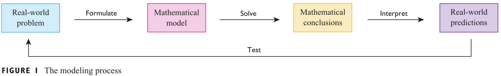
위 그림은 수학적 모델링 과정을 형상화한 것이다. 간단하게 예를 들어서 우리가 고등학교 때 배우는 자유낙하하는 공의 속도와 화학적 반응으로 만들어지는 부산물의 확산을 모델링하는 것이다. 이러한 모델링은 방정식으로 이루어지는 데 우리가 지난 포스팅에서 보았던 다항함수부터 삼각함수, 지수함수까지 다양하게 활용될 수 있다. 이제부터는 위 그림에서 각 단계를 자세히 알아보자.
- 수학적 모델을 공식화 : 독립변수와 종속변수를 명확히 정하고 현상을 간단하게 만들기 위해서 몇 가지 가정을 추가한다.
- 알고있는 수학을 적용 : 수학적 모델로부터 어떤 결과를 얻어내기 위해 미적분학, 미분방정식, 선형대수학 등의 방법론을 적용한다.
- 수학적 결론 해석 : 얻은 결과를 해석하고 이를 실제 세계에 적용하여 어떤 의미인지 분석한다.
- 새로운 데이터에 대한 시험 : 1-3의 결과를 새로운 데이터에 적용하여 잘 들어맞는 지 확인하고 다시 수정한다.
예를 들어서 자유낙하하는 공의 속도를 모델링한다고 가정하자. 시간에 따른 속도를 계산하기 때문에 그러면 독립변수는 시간, 종속변수는 속도로 정하면 된다. 그리고 문제를 간단하게 만들기 위해 공과 공기 사이에서 발생하는 마찰과 같은 다양한 외력은 무시한다. 이를 시작으로 우리가 알고 있는 수학을 적용하고 결과를 해석한 뒤 실제로 공을 던졌을 때 동일한 결과가 나오는 지 검증한다. 하지만, 단순화시킨 가정으로 인해 오차가 발생한다면 다른 외력을 추가하면서 정확하게 모델링 될 수 있도록 작업을 반복하면 된다.
2. Mathematical Model
정의
수학적 모델은 실제 세계의 현상을 수학적으로 묘사(Mathematical Description)한 것이다.
설명
수학적 모델링에서 중요한 것은 어떤 수학적 모델을 사용하느냐는 것이다. 이번에는 어떤 수학적 모델들이 있는지 알아보자.
1). 선형 함수(Linear Function): $y = f(x) = mx + b$
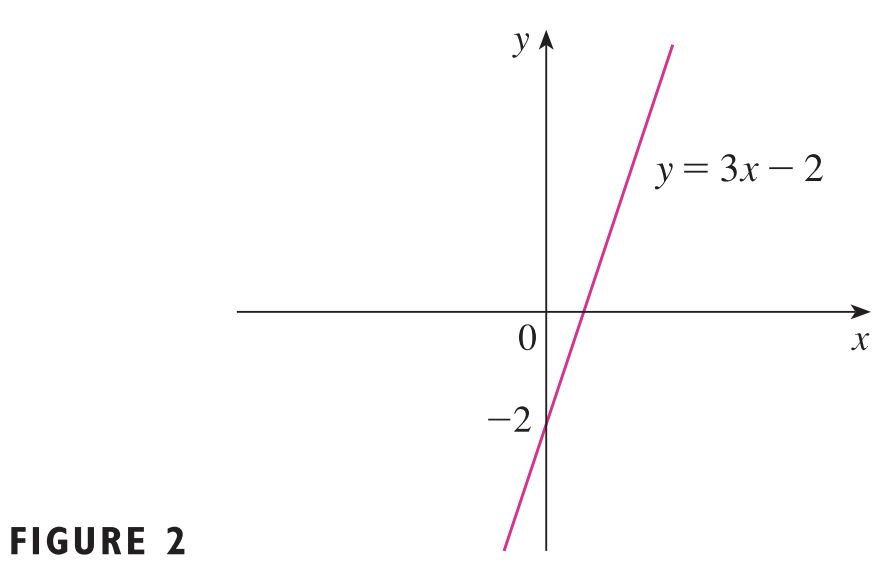
선형 모델은 위 그림과 같이 단순한 직선으로 수학적 모델들 중 가장 간단한 모델이다. 2개의 변수 $m$과 $b$로 이루어져있으며 각각 직선의 기울기와 $y$-절편을 의미한다. 선형 모델의 가장 큰 특징은 모든 정의역에 대해서 $y$가 일정한 비율로 커진다는 것이다.
2). 다항 함수(Polynomial Function) : $P(x) = a_{n}x^{n} + \cdots + a_{1}x + a_{0}$
다항 모델은 선형 모델보다 더 복잡한 모델로 $n + 1$개의 변수($a_{n}, \dots, a_{1}, a_{0}$)로 이루어진 수학적 모델이다. 여기서 $a_{0}$는 선형 모델에서 $b$와 동일한 역할로 $y$-절편을 의미한다. 그리고 $a_{n}, \dots, a_{1}$은 계수(coefficient)라고 한다.
여기서 다항식의 복잡도를 조절하는 파라미터가 바로 차수(degree) $n$이다. $n$이 커질수록 다항 모델은 복잡한 데이터를 더 잘 표현할 수 있다. 그리고 $n = 1$이라면 방금 봤던 선형 함수가 된다.
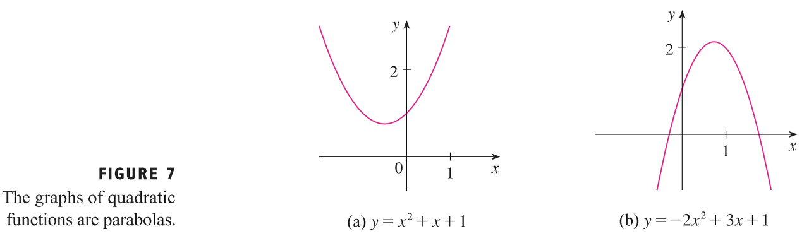
$n = 2$일 때는 이차 다항 모델(Quadratic Polynomial Model)로 $a_{2}$가 양수면 아래로 볼록, 음수면 위로 볼록한 함수가 된다.
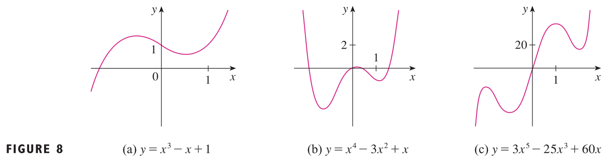
$n = 3$일 때는 삼차 다항 모델(Cubic Polynomial Model)이라고 한다. 뿐만 아니라 $n = 4$일 때는 4차, $n = 5$일 때는 5차와 같이 더 다양한 다항 모델을 만들어 볼 수 있다.
3). 거듭제곱 함수(Power Function) : $f(x) = x^{a}$
거듭제곱 함수는 $a$에 따라서 그 모양이 결정된다.
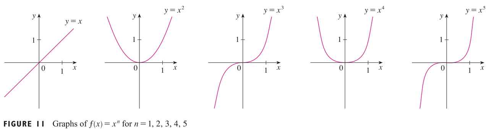
먼저, $a = n$이고 $n$이 양의 정수일 때를 고려해보자. 그러면 $f(x) = x^{n}$은 다항모델에서 다른 항 없이 최고차항만 있는 단항 함수가 된다. 예를 들어 위의 그림과 같이 $x^{1}, x^{2}, x^{3}, \dots $가 될 수 있다.
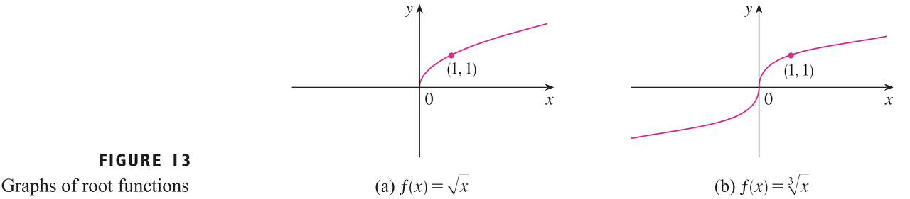
다음으로 $a = \frac{1}{n}$인 경우를 고려해보자. 그러면 $f(x) = x^{\frac{1}{n}} = \sqrt[n]{x}$가 된다. 이러한 함수를 우리는 앞으로 근 함수(root function)이라고 하자. 만약, $n = 2$라면 위에서 그림(a)와 같이 $f(x) = \sqrt{x}$가 되고 정의역은 $[0, \infty)$가 된다. 그리고 $n = 3$이라면 그림(b)와 같이 $f(x) = \sqrt[3]{x}$가 되고 정의역은 $\mathbb{R}$이 된다. 이를 관찰해보면 근 함수 역시 $a = n$일때와 마찬가지로 $n$이 짝수, 홀수인지에 따라서 그 특성이 결정된다. 만약 $n$이 짝수라면 그림(a)와 유사해지고 홀수라면 그림(b)와 유사해진다.
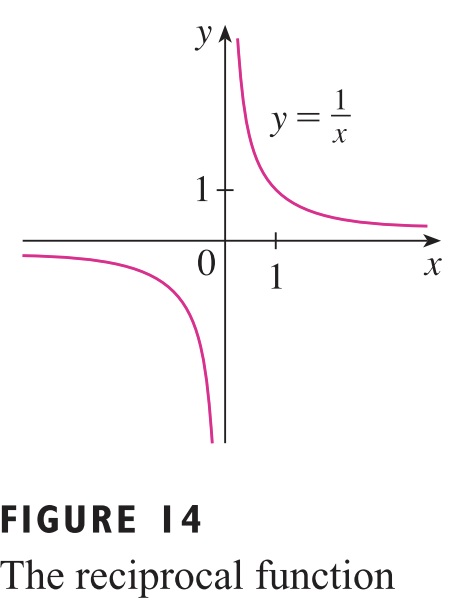
마지막으로 $a = -1$일 경우에는 $f(x) = \frac{1}{x}$가 된고 이를 역함수(우리가 알고 있는 $f^{-1}(x)$와 다르니 유의하자.) 또는 역수함수라고 한다.
4). 유리 함수(Rational Function) : $f(x) = \frac{P(x)}{Q(x)}$
유리 함수는 분자와 분모가 모두 다항함수로 이루어진 함수이다. 유리 함수에서 가장 중요한 것은 바로 정의역이다. 왜냐하면 일반적으로 우리가 분수를 정의할 때 가장 먼저 신경써야하는 것은 분모가 0이 되면 안되는 것이기 때문에 $Q(x) = 0$인 구간은 정의역에서 빼주어야한다.
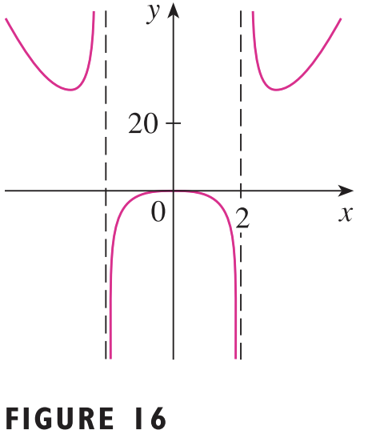
예를 들어서 $f(x) = \frac{2x^{4} - x^{2} + 1}{x^{2} - 4}$의 정의역은 $x^{2} - 4 \neq 0$인 모든 구간이기 때문에 $(-\infty, -2) \cup (-2, 2) \cup (2, \infty)$이다.
5). 대수 함수(Algebraic Function)
지금까지 보았던 선형함수, 거듭제곱 함수, 유리함수는 아마 한번쯤을 들어보았을 것이다.하지만 대수 함수(Algebraic Function)에 대해서는 들어보지 못한 사람들이 있을 텐데 생각보다 간단하다.
정의
함수 $f$가 대수적 연산(더하기, 뺴기, 곱하기, 나누기, 제곱근 등)의 조합으로 이루어진다면 대수 함수이다.
사실 위에서 정의한 대수 함수 정의는 많은 수학 전공자들이 보면 대노할 정의이다. 왜냐하면 더 정확한 정의가 따로 있는 데 우리는 이해를 목표로 하기 때문에 이 부분에 대해서는 잠시 넘어가도록 하겠다.
6). 삼각 함수(Trigonal Function)
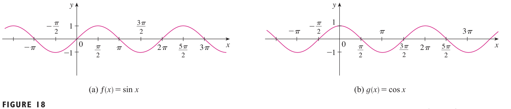
삼각함수는 우리가 굉장히 잘 알고 있는 $\sin{x}$와 $\cos{x}$를 기반으로 만들어진 함수들을 의미한다. 예를 들어 $\tan{x} = \frac{\sin{x}}{\cos{x}}$는 삼각함수가 된다. 이러한 삼각함수들 중 가장 기본적인 $\sin{x}$와 $\cos{x}$는 항상 $[-1, 1]$사이의 값을 가진다. 이 뿐만 아니라 더 다양한 특성을 가지고 있는데 이는 이후에 차차 설명하도록 하자.
7). 지수 함수(Exponential Function) : $f(x) = a^{x}$
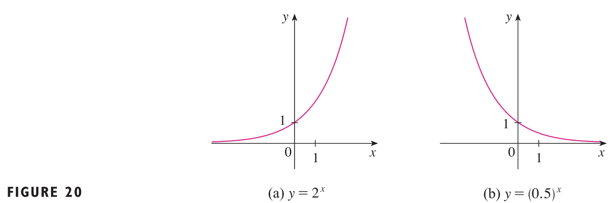
지수함수는 $f(x) = a^{x}$ 꼴을 가진 함수를 의미한다. 거듭제곱 함수 $f(x) = x^{a}$와 비교해보면 $a$와 $x$의 위치가 바뀐 것을 볼 수 있으니 혼동하면 안된다. 거듭제곱 함수와 마찬가지로 $a$의 범위에 따라 지수함수는 그 모양이 변한다. 만약 $a > 1$이라면 그림(a)와 같이 우상향 그래프가 되고 $a < 1$이라면 그림(b)와 같이 우하향 그래프가 그려진다.
8). 로그 함수(Logarithmic Function) : $f(x) = \log_{a}{x}$
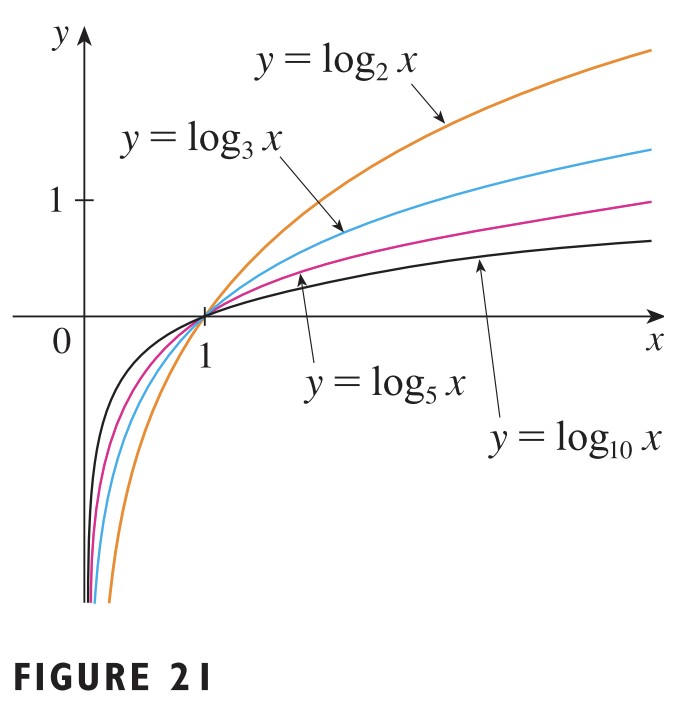
로그함수는 지수함수의 역함수(inverse function)을 의미한다. 여기서 $a$는 밑(base)라고 불리고 $a$의 값에 따라서 그래프의 모양이 변화한다. 로그함수는 아주 중요한 함수이기 때문에 이후에 더 자세히 설명하도록 하자.
9). 초월 함수(Transendental Function)
초월함수는 대수함수가 아닌 모든 함수를 의미한다.